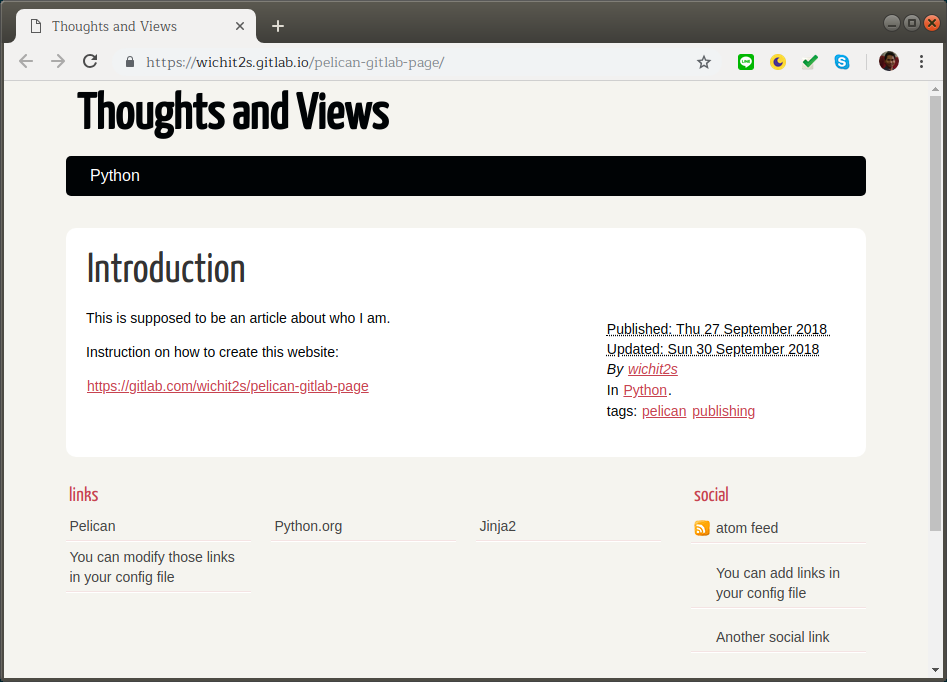

6. การสร้างเว็บไซต์ด้วย Pelican บน Gitlab¶
สามารถดูเว็บตัวอย่างได้ที่
Demo: https://wichit2s.gitlab.io/pelican-gitlab-page/
6.1. ลงทะเบียนที่ gitlab.com¶
เมื่อสมัครแล้วจะได้ loginname ของผมชื่อ wichit2s
ทำตามขั้นตอนที่เหลือทั้งหมด โดยแทน wichit2s ด้วย loginname ของตัวเองก็แล้วกันนะครับ
หมายเหตุ: ถ้าไม่รู้ว่า loginname คืออะไรให้ click ที่รูป profile ของตัวเอง ชื่อ loginname ควรจะติดกับเครื่องหมาย @
6.2. สร้าง project ใหม่ ชื่อ wichit2s.gitlab.io¶
อย่าลืมเปลี่ยน wichit2s เป็น loginname ของตัวเอง
6.3. Clone project¶
git config --global user.name "wichit2s"
git config --global user.email "wichits@ubu.ac.th"
git clone https://gitlab.com/wichit2s/wichit2s.gitlab.io.git
cd wichit2s.gitlab.io/
6.5. เริ่มสร้างไฟล์ต่างๆ¶
pelican-quickstart
โปรแกรมจะให้กรอกข้อมูลต่อไปนี้
- ::
Welcome to pelican-quickstart v3.7.1.
This script will help you create a new Pelican-based website.
Please answer the following questions so this script can generate the files needed by Pelican.
> Where do you want to create your new web site? [.]
.> What will be the title of this web site?
Personal Website> Who will be the author of this web site?
Wichit Sombat> What will be the default language of this web site? [en]
th> Do you want to specify a URL prefix? e.g., http://example.com (Y/n)
Y> What is your URL prefix? (see above example; no trailing slash)
https://wichit2s.gitlab.io> Do you want to enable article pagination? (Y/n)
Y> How many articles per page do you want? [10]
10> What is your time zone? [Europe/Paris]
Asia/Bangkok> Do you want to generate a Fabfile/Makefile to automate generation and publishing? (Y/n)
Y> Do you want an auto-reload & simpleHTTP script to assist with theme and site development? (Y/n)
Y> Do you want to upload your website using FTP? (y/N)
N> Do you want to upload your website using SSH? (y/N)
N> Do you want to upload your website using Dropbox? (y/N)
N> Do you want to upload your website using S3? (y/N)
N> Do you want to upload your website using Rackspace Cloud Files? (y/N)
N> Do you want to upload your website using GitHub Pages? (y/N)
NDone. Your new project is available at ………
6.6. เพิ่มบทความใหม่ content/introduction.md¶
สร้างไฟล์สำหรับกรอก post แรกชื่อ content/introduction.md แล้วกรอกข้อมูลต่อไปนี้
Title: My first post
Date: 2018-09-27 10:20
Modified: 2018-09-28 19:30
Category: Python
Tags: pelican, publishing
Slug: introduction
Authors: Wichit Sombat
Summary: introducing Wichit Sombat
This is the start of your first post. You should fill this post up.
6.7. เพิ่มไฟล์ .gitlab-ci.yml¶
โดยมีคำสั่งต่อไปนี้
image: python:3.6-alpine
pages:
script:
- pip install -r requirements.txt
- pelican content -o public -s publishconf.py
artifacts:
paths:
- public/
6.8. เปลี่ยน output directory เป็น public¶
โดยทำตามขั้นตอนต่อไปนี้
6.8.1. change in pelicanconf.py¶
PATH = 'content'
OUTPUT_PATH = 'public'
6.8.2. change in develop_server.sh¶
INPUTDIR=$BASEDIR/content
OUTPUTDIR=$BASEDIR/public
CONFFILE=$BASEDIR/pelicanconf.py
6.9. แก้ไขไฟล์ .gitignore¶
/_book/
/node_modules/
/book.pdf
/book.mobi
/book.epub
*~
._*
*.lock
*.DS_Store
*.swp
*.out
*.pid
*.py[cod]
output
public
__pycache__/
6.10. บันทึกไฟล์ทั้งหมดแล้วส่งไป gitlab¶
git add .
git commit -m "ส่งเว็บไซต์ส่วนตัวครั้งแรก"
git push origin master
6.11. นั่งรอให้ Gitlab เตรียมเว็บไซต์¶
หลังจาก 2 - 5 นาทีเว็บไซต์ควรจะพร้อมใช้งานที่
https://[loginname].gitlab.io/
ตัวอย่างเว็บไซต์: https://wichit2s.gitlab.io/pelican-gitlab-page/